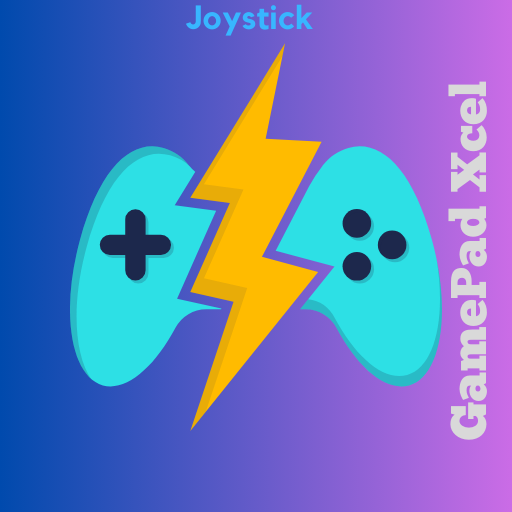

Descrição:
Transforme seu smartphone em um poderoso controlador com o GamepadXcell, a solução definitiva para aprimorar sua experiência de controle no PC. Este aplicativo oferece uma conexão intuitiva e sem esforço entre o seu celular e o seu computador.
Recursos Principais:
🎮 Simulação de Gamepad Avançada: Transforme seu dispositivo móvel em um gamepad virtual, proporcionando uma sensação autêntica de controle.
🕹️ Controle Total: Navegue pelo seu computador com facilidade, controle jogos com precisão.
📱 Conexão Sem Fio: Conecte-se ao seu PC através de uma conexão sem fio estável, eliminando a necessidade de cabos e oferecendo total liberdade de movimento.
🌐 Compatibilidade Universal: Funciona perfeitamente com uma variedade de jogos e aplicativos.
🚀 Configuração Simples: Configure o GamepadXcell em minutos, sem complicações. Comece a jogar no seu PC com facilidade.
Transforme a maneira como você interage com seu computador. Baixe o GamepadXcell agora e leve a experiência de controle para um novo patamar!
Conexão Simples: Conecte seu smartphone Android ao seu PC com facilidade, seja por meio de conexão Wi-Fi, para iniciar sua aventura de jogo sem complicações.
